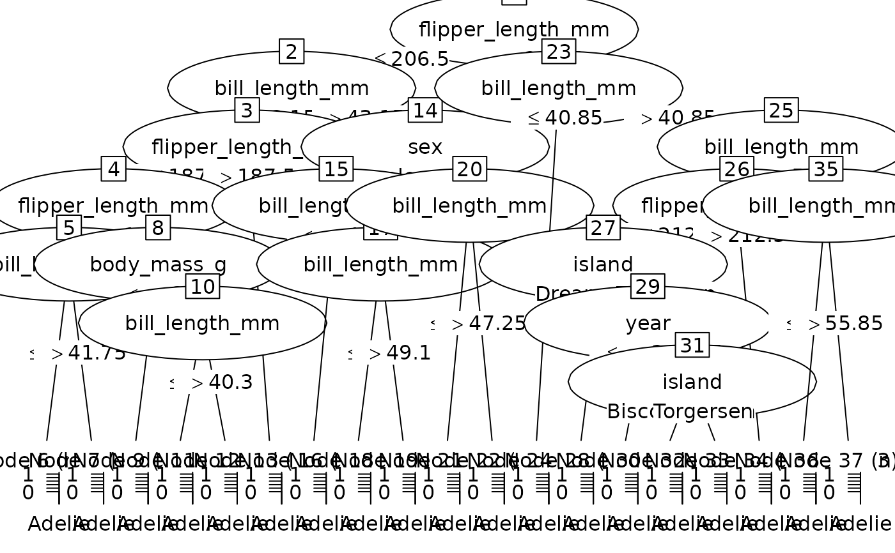

as.party.ranger.RdConvert a single tree from a ranger random forest model to a party object for use with partykit visualization and analysis tools.
# S3 method for class 'ranger'
as.party(obj, tree = 1L, data = NULL, ...)A ranger object from the ranger package.
Integer specifying which tree to convert (1-based indexing, default is 1). Must be between 1 and the number of trees in the forest.
Data.frame containing the training data, including both predictors and response variable. Required for proper party object creation with fitted values and node summaries.
Not currently used.
A party object from the partykit package.
The ranger package stores trees in obj$forest with parallel vectors:
split.varIDs[[tree]]: 0-based variable indices for splits
split.values[[tree]]: threshold values for splits
child.nodeIDs[[tree]]: matrix with 2 columns (left, right child IDs)
is.ordered[[tree]]: whether split variable is ordered (for categoricals)
All node IDs are 0-based (root = 0)
Internally, ranger uses 0-based node indices (root is node 0)
User-facing tree parameter uses 1-based indexing (R convention)
Leaf nodes have split.varIDs entry of NA or large sentinel value
if (rlang::is_installed(c("ranger", "palmerpenguins"))) {
# Classification example
data(penguins, package = "palmerpenguins")
penguins <- na.omit(penguins)
set.seed(2847)
rf <- ranger::ranger(species ~ ., data = penguins, num.trees = 3)
# Convert first tree
party_tree <- as.party(rf, tree = 1L, data = penguins)
print(party_tree)
plot(party_tree)
# Predictions from party object
predict(party_tree, newdata = penguins[1:5, ])
# Regression example
data(mtcars)
set.seed(5193)
rf_reg <- ranger::ranger(mpg ~ ., data = mtcars, num.trees = 3)
party_tree_reg <- as.party(rf_reg, tree = 1L, data = mtcars)
print(party_tree_reg)
}
#>
#> Model formula:
#> ~island + bill_length_mm + bill_depth_mm + flipper_length_mm +
#> body_mass_g + sex + year
#>
#> Fitted party:
#> [1] root
#> | [2] flipper_length_mm <= 206.5
#> | | [3] bill_length_mm <= 43.15
#> | | | [4] flipper_length_mm <= 187.5
#> | | | | [5] flipper_length_mm <= 186.5
#> | | | | | [6] bill_length_mm <= 41.75: Adelie (n = 40, err = 0.0%)
#> | | | | | [7] bill_length_mm > 41.75: Adelie (n = 2, err = 50.0%)
#> | | | | [8] flipper_length_mm > 186.5
#> | | | | | [9] body_mass_g <= 3325: Adelie (n = 5, err = 20.0%)
#> | | | | | [10] body_mass_g > 3325
#> | | | | | | [11] bill_length_mm <= 40.3: Adelie (n = 5, err = 0.0%)
#> | | | | | | [12] bill_length_mm > 40.3: Chinstrap (n = 3, err = 33.3%)
#> | | | [13] flipper_length_mm > 187.5: Adelie (n = 87, err = 0.0%)
#> | | [14] bill_length_mm > 43.15
#> | | | [15] sex in female
#> | | | | [16] bill_length_mm <= 47.65: Chinstrap (n = 23, err = 0.0%)
#> | | | | [17] bill_length_mm > 47.65
#> | | | | | [18] bill_length_mm <= 49.1: Chinstrap (n = 2, err = 50.0%)
#> | | | | | [19] bill_length_mm > 49.1: Chinstrap (n = 6, err = 0.0%)
#> | | | [20] sex in male
#> | | | | [21] bill_length_mm <= 47.25: Adelie (n = 6, err = 0.0%)
#> | | | | [22] bill_length_mm > 47.25: Chinstrap (n = 29, err = 0.0%)
#> | [23] flipper_length_mm > 206.5
#> | | [24] bill_length_mm <= 40.85: Adelie (n = 1, err = 0.0%)
#> | | [25] bill_length_mm > 40.85
#> | | | [26] bill_length_mm <= 54.15
#> | | | | [27] flipper_length_mm <= 212.5
#> | | | | | [28] island in Biscoe: Gentoo (n = 31, err = 0.0%)
#> | | | | | [29] island in Dream, Torgersen
#> | | | | | | [30] year <= 2008.5: Chinstrap (n = 2, err = 0.0%)
#> | | | | | | [31] year > 2008.5
#> | | | | | | | [32] island in Biscoe, Dream: Chinstrap (n = 2, err = 0.0%)
#> | | | | | | | [33] island in Torgersen: Adelie (n = 1, err = 0.0%)
#> | | | | [34] flipper_length_mm > 212.5: Gentoo (n = 83, err = 0.0%)
#> | | | [35] bill_length_mm > 54.15
#> | | | | [36] bill_length_mm <= 55.85: Gentoo (n = 3, err = 33.3%)
#> | | | | [37] bill_length_mm > 55.85: Gentoo (n = 2, err = 0.0%)
#>
#> Number of inner nodes: 18
#> Number of terminal nodes: 19

#>
#> Model formula:
#> ~cyl + disp + hp + drat + wt + qsec + vs + am + gear + carb
#>
#> Fitted party:
#> [1] root
#> | [2] wt <= 2.38
#> | | [3] hp <= 65.5: 32.150 (n = 2, err = 6.1)
#> | | [4] hp > 65.5: 27.780 (n = 5, err = 56.4)
#> | [5] wt > 2.38
#> | | [6] drat <= 3.815
#> | | | [7] hp <= 83.5: 24.400 (n = 1, err = 0.0)
#> | | | [8] hp > 83.5
#> | | | | [9] carb <= 3.5
#> | | | | | [10] qsec <= 16.945: 15.500 (n = 1, err = 0.0)
#> | | | | | [11] qsec > 16.945
#> | | | | | | [12] disp <= 317.9: 17.871 (n = 7, err = 42.4)
#> | | | | | | [13] disp > 317.9: 18.950 (n = 2, err = 0.1)
#> | | | | [14] carb > 3.5
#> | | | | | [15] drat <= 3.635: 14.083 (n = 6, err = 59.9)
#> | | | | | [16] drat > 3.635: 13.300 (n = 1, err = 0.0)
#> | | [17] drat > 3.815
#> | | | [18] wt <= 3.16
#> | | | | [19] am <= 0.5: 22.800 (n = 1, err = 0.0)
#> | | | | [20] am > 0.5
#> | | | | | [21] drat <= 4.005: 21.000 (n = 2, err = 0.0)
#> | | | | | [22] drat > 4.005: 21.400 (n = 1, err = 0.0)
#> | | | [23] wt > 3.16: 17.600 (n = 3, err = 5.8)
#>
#> Number of inner nodes: 11
#> Number of terminal nodes: 12